Step back in time, right by the river.
Valerie is a 1964 Sunliner with her own deck, a private bathroom with a hot shower, an outdoor bath with a view and a fire pit. The Barrington runs past a stone's throw away, freely flowing from the Barrington Tops wilderness.
- Sleeps 2
- 1 bedroom, 1 bath
- Outdoor bath and fire pit
- No WiFi, no reception
- No pets
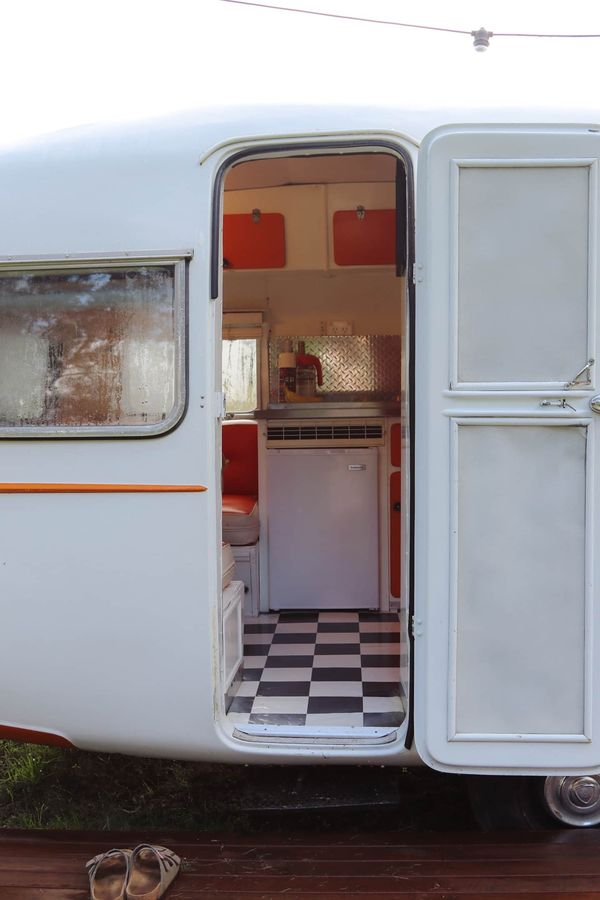
Inside Valerie
Orange cupboards, a checkerboard floor and lots of luxury and retro features, all inside a caravan built in 1964.
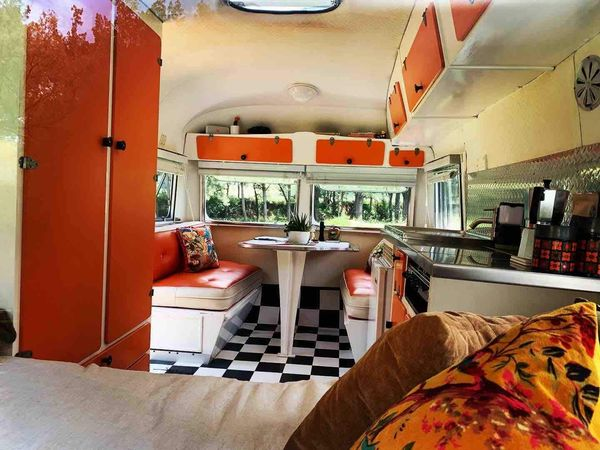
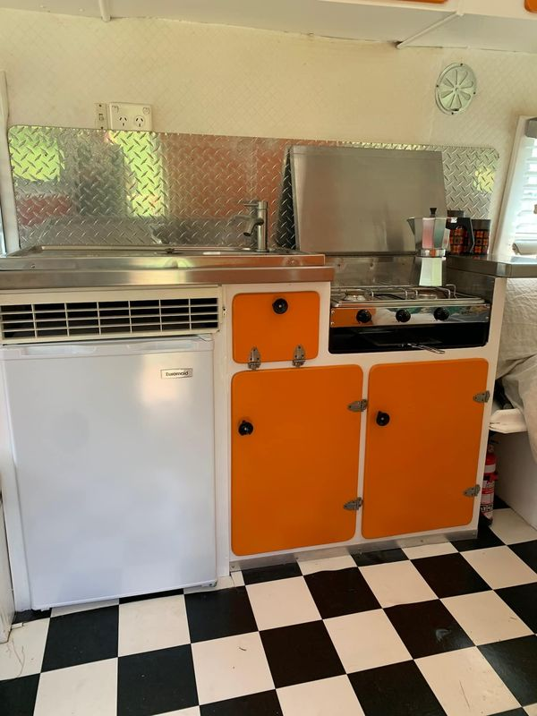
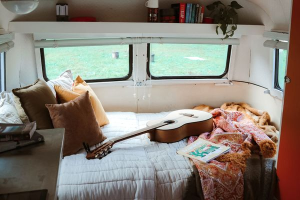
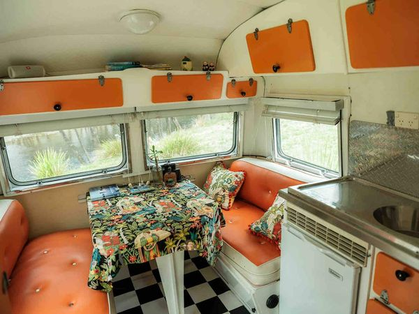
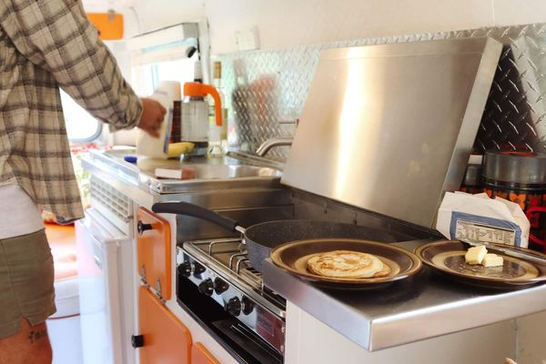
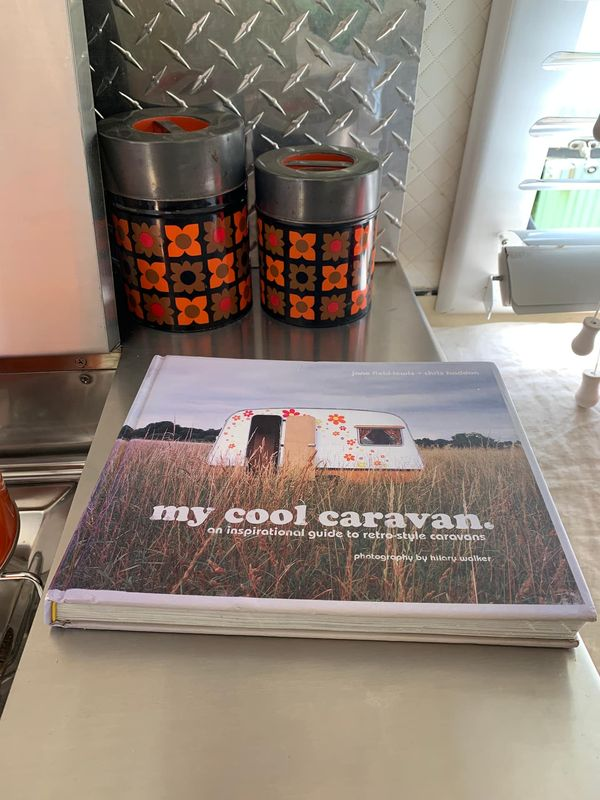
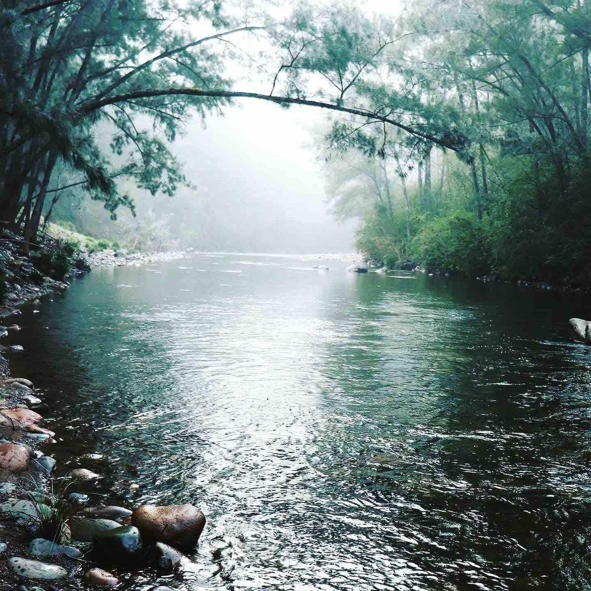
The Barrington, a few metres away
The clear-flowing Barrington and Cobark rivers run right past, with a deep hole for swimming and shallow rapids for lazing in. A platypus lives in the river only a few metres from Valerie. Waking up early is the best way to see it.
We swam every morning, despite the cold, followed by a lovely, hot outdoor bath.
Anastasia, Airbnb
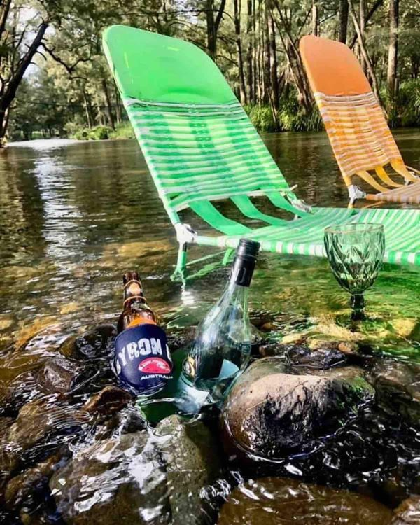
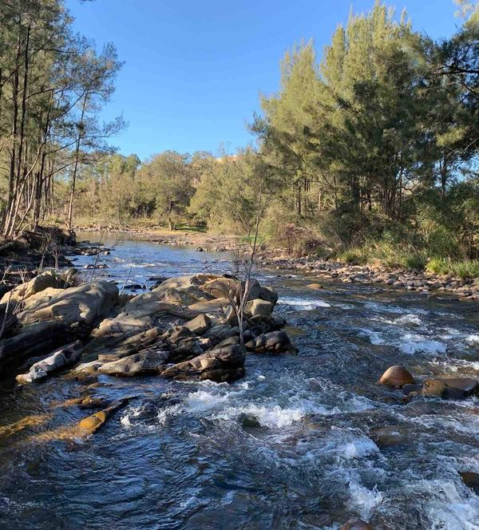
A bath outside, a fire after dark
The clawfoot bath sits outside on the deck by the bathroom hut, with a view. After dark, relax beside the fire pit under the stars.
The sound of the river and small waterfall is so peaceful, great bath, great fire pit.
Amy, Airbnb
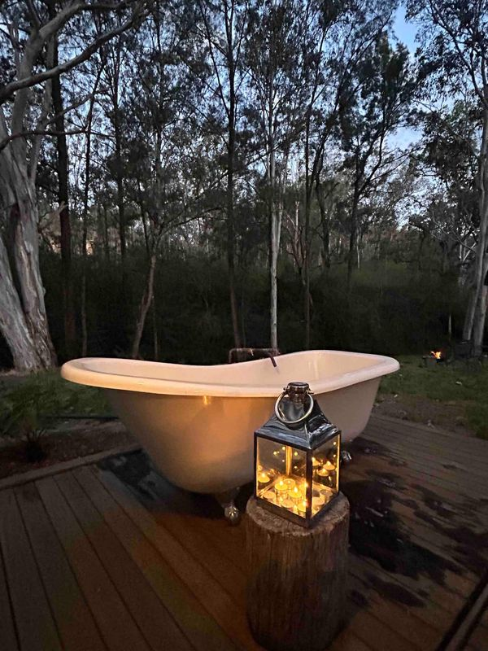
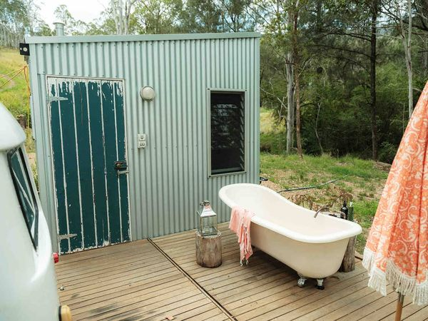
Getting to Valerie
On Scone Road at Cobark, with Barrington Tops National Park on your doorstep. You get the exact spot after booking.
- Gloucester, for a shop or a mealabout 30 min
- Barrington Tops National Parkon your doorstep
- Gloucester Walking Track1.8 km return
- The rivera stone's throw
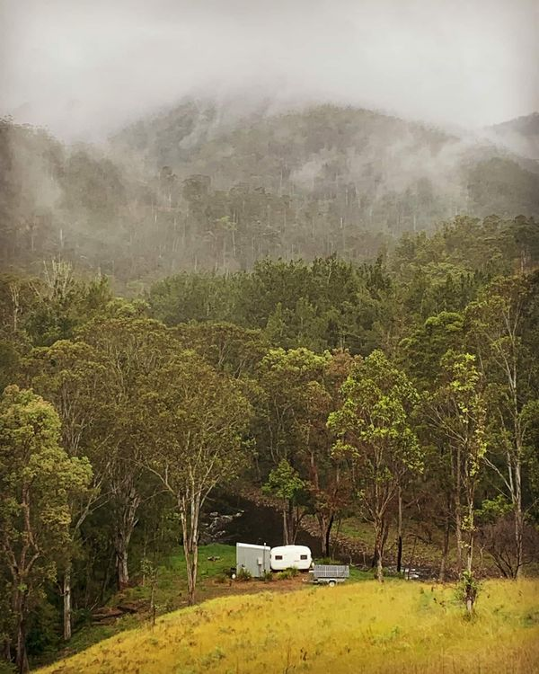
Guests on Valerie
It was even better than i imagined. Peaceful. Just wonderful to recharge.
Natalie, AirbnbValerie is in a beautiful location, and her generous and lovely hosts make it the perfect stay.
Lisa, RiparideCute and cosy van, with great bath and private view of the river.
James, RiparideValerie is close enough to Gloucester for a quick shop or meal, and far enough away to feel like you're in your own world.
Ryan, Airbnb
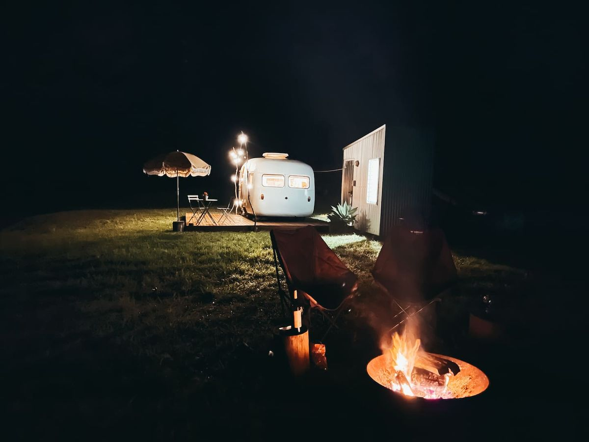
Book a few nights with Valerie
Pick your dates on Airbnb or Riparide. Douglas usually answers within the hour.
- Two nights minimum
- Check in after 2pm, check out by 10am
- For two guests, no pets
- Bring a book. There's no reception.